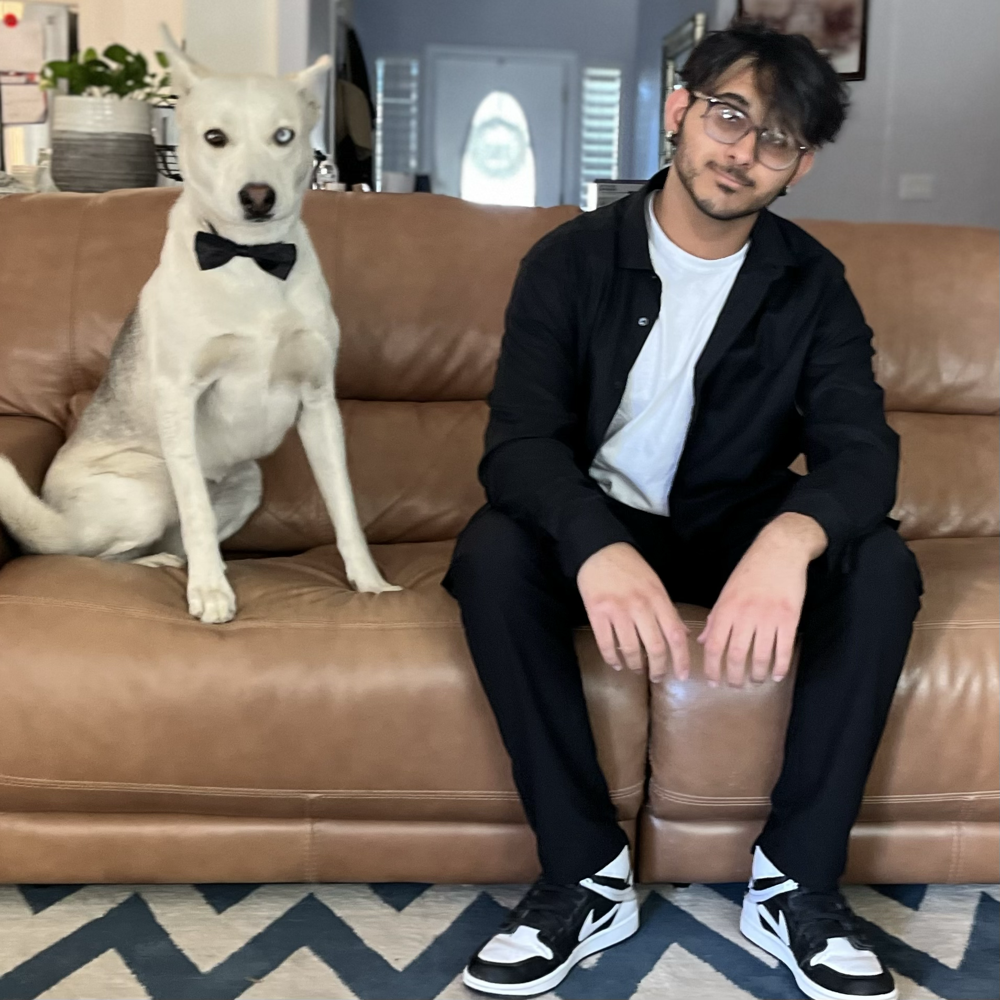
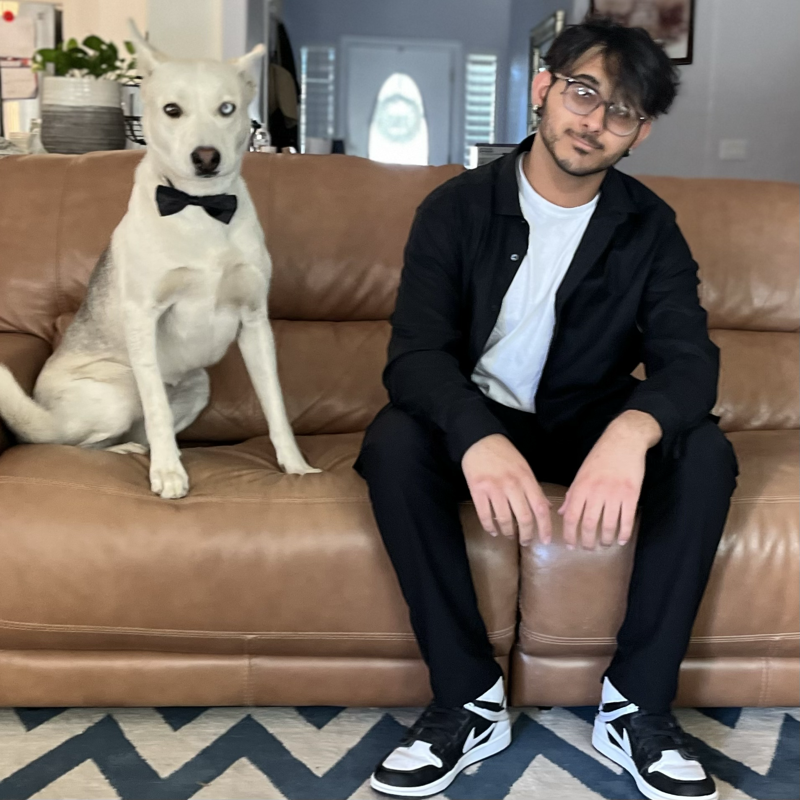

Shawn's Homepage
 

About Me
Hello, my name is Shawn Dhillon. I am a third year student at UCSC majoring in Computer Science. One thing about me is that I love animals! Included in the photos above are me and my dog Misha as well as a photo of my cat Cosmic Destroyer. As you may have noticed I also enjoy using photoshop in my spare time. In the peice above I edited mo (short for Cosmo which is in turn short for Cosmic Destroyer) to pay homage to "That Two-Thousand Yard Stare," by Thomas Lea an art peice in which I feel perfectly encapsulate the permanent shellshock look embodied by mo. My main hobby is reading some of my favorite mediums of media and generes include: Manga, light novels, Sci-fi, and Fantasy.